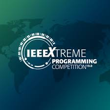

Maria Lazou
/Ma-REE-ah La-ZOO/ Hi! I am an Electrical & Computer Engineering student at the
National Technical University of Athens
expecting to graduate by the end of this academic year (July '26').
Currently, I am a visiting research scholar at Brown University
supervised by Prof. Nikos Vasilakis.
I work closely with the ATLAS group,
which is part of the Systems-Computer Science department,
on two different projects, one of which forms the foundation of my diploma thesis in collaboration with Prof.
Georgios Goumas from my home university.
Although I am still exploring my direction, I am especially interested in operating systems, with a focus on
performance and security guarantees,
and love exploring ideas that lie in the intersection of hardware and software
including compilers and low-level optimization techniques.
When not coding you will most probably find me running or walking around the city, taking photographs and sketching.
Projects
ATLAS
-
Runtime monitors for detecting shell script bugs
(in progress...) -
Secure offloading of partial computations into SGX enclaves
(in progress...)
NTUA - highlights
-
A full
compiler
for language ALAN
(C++)
-
Lunix: a simple charachter device driver implementation
(C)
-
Ext2-light: a simple filesystem module implementation
(C)
-
Song DB: a complete distriuted system based on Chort-DHT with additional features
(Rust)
-
miniML:
a complete interpreter & unit testing,
type inference & let polymorphism, and
a bytecode virtual machine with garbadge collector
(Haskell, Haskell, Rust)
-
Exploring
parallelization techniques with OPENMP, MPI, CUDA
(C)
-
Archimedes: a problem solving application built with microservices
(Python)
-
Ntuaflix: a REST-API for browsing and interracting with movies & metadata
(Python - JS)
Other
-

IEEEXtreme 24-hour contest
Participated in IEEEXtreme.18 (ranked among 6%), IEEEXtreme.17 (ranked among 11%), IEEEXtreme.16, IEEEXtreme.15 -
 Summer camp @ CTY-Greece
Summer camp @ CTY-Greece
Selected among the highest-scoring participants and attended courses in Computer Science (2017) & Cryptology(2016) -
Volunteer
Software Workshop - a virtual escape room in the Shell! -
 Volunteer
Volunteer